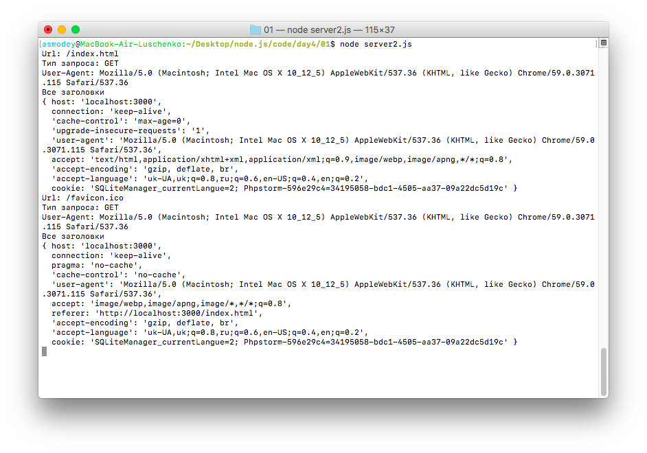

Для работы с сервером и протоколом http в Node.js используется модуль http.
Чтобы создать сервер, следует вызвать метод http.createServer():
var http = require("http");
http.createServer().listen(3000);
Метод createServer() возвращает объект http.Server. Но чтобы сервер мог прослушивать и обрабатывать входящие подключения, у объекта сервера необходимо вызвать метод listen(), в который в качестве параметра передается номер порта, по которому запускается сервер.
Для обработки подключений в метод createServer можно передать специальную функцию:
var http = require("http");
http.createServer(function(request, response){
response.end("Hello world!");
}).listen(3000);
//Вывод мы получим уже не в консоль, а при запуске в браузере по порту localhost:3000
Эта функция принимает два параметра:
Параметр request позволяет получить информацию о запросе и представляет объект http.IncomingMessage. Отметим некоторые основные свойства этого объекта:
Например, определим следующий файл app.js:
var http = require("http");
http.createServer(function(request, response){
console.log("Url: " + request.url);
console.log("Тип запроса: " + request.method);
console.log("User-Agent: " + request.headers["user-agent"]);
console.log("Все заголовки");
console.log(request.headers);
response.end();
}).listen(3000);
Запустим его и обратимся в браузере по адресу http://localhost:3000/index.html - если все сделано правильно, то в консоли вы увидите вывод указанных выше команд.
Параметр response управляет отправкой ответа и представляет объект http.ServerResponse. Среди его функциональности можно выделить следующие методы:
Например, изменим файл app.js следующим образом:
var http = require("http");
http.createServer(function(request, response){
response.setHeader("UserId", 12);
response.setHeader("Content-Type", "text/html");
response.write("<h2>hello world</h2>");
response.end();
}).listen(3000);
Запустим файл и обратимся в браузере к приложению. Если страница вывела сообщение "hello world", то вы все сделали правильно.
К сожалению, созданный сервер может на все запросы отвечать только одной строкой. Давайте научим его различать наши запросы.
Для того, чтобы прочитать файл нам понадобится доступ к файловой системе, который можно получить, подключив модуль fs. Так что давайте подключим его и используем метод readFile.
'use strict';
let http = require('http'),
fs = require('fs');
http.createServer(function(request, response) {
fs.readFile('index.html', { encoding: 'utf8' }, function(error, file) {
});
}).listen(3000);
Приведенный выше код должен быть вполне понятен, но давайте рассмотрим его подробнее. Метод readFile асинхронный, то есть после завершения чтения файла (или получения ошибки) будет получен доступ к функции обратного вызова (callback). Мы также можем указать кодировку, в которой будет возвращаться содержимое файла. В нашем случае — это utf-8.
Теперь, когда мы прочитали наш HTML-файл, я предполагаю, что мы должны ответить на запрос его содержимым. Это делается с помощью объекта respond и нескольких его методов.
Первый метод writeHead. Он принимает два аргумента: код статуса сервера и объект, содержащий тип контента (среди прочего).
response.writeHead(200, { 'Content-Type': 'text/html' });
Следующий метод write, где мы пишем контент или, в нашем случае, HTML-файл:
response.write(file);
Наконец, мы должны завершить наш ответ, используя метод end. Все вместе с остальным кодом будет выглядеть так:
var http = require('http');
var fs = require('fs');
http.createServer(function(request, response) {
fs.readFile('index.html', { encoding: 'utf8' }, function(error, file) {
if (!error) {
response.writeHead(200, { 'Content-Type': 'text/html'});
response.write(file);
response.end();
}
});
}).listen(3000);
Итак, мы получили возможность построить простой роутер для сервера.
Задача1Давайте попробуем решить простую задачу: пользователь вводит url адреса, а сервер загружает ему нужные страницы. Для начала ограничимся простой задачей - на сервере есть две страницы one.html и two.html с любым содержимым. Если пользователь вводит адрес /one или /two - то пользователю загружается соответственно страницы one.html и two.html. Если пользователь вводит любой другой адрест - то генерируется (именно генерируется) страница 404.
Разобьем задачу на составляющие - для начала, мы знаем что url адрес, который вводит пользователь можно получить из объека request
var url = request.url;
Этот url выглядит следующим образом: "/one". Наша задача - сравнить данный адрес с имеющимися и загрузить нужный файл. Поскольку задача загрузки будет повторяться очень часто, то удобно вынести процедуру загрузки файла в отдельную функцию или метод.
var http = require('http');
var fs = require('fs');
http.createServer(function(request, response) {
//Ф-я загрузки содержимого из файла
function routeLoad(path) {
fs.readFile(path, { encoding: 'utf8' }, function(error, file) {
if (!error) {
response.writeHead(200, { 'Content-Type': 'text/html'});
response.write(file);
response.end();
}
});
}
var url = request.url;
if (url=='/one') routeLoad('one.html');
else if (url=='/two') routeLoad('two.html');
else {
response.setHeader("Content-Type", "text/html");
response.write("<h2>404</h2>");
response.end();
}
}).listen(3000);
Итак, мы сделали роутер и получили возможность загружать разные страницы при разных введенных адресах, т.е. заложили основу будущего сайта. Давайте внесем изменения в файлы и добавим в файл one.html и two.html ссылки на изображения. Создайте папку, поместите в нее изображения и добавьте их на страницу. Тажке, добавьте в страницу изображение с сети Интернет напрямую.
После изменений в html, перезагрузите сервер и зайдите на созданную страницу. Удивительно, но страница из сети Интернет изображение загрузилось нормально, а вот локально загрузить изображение не удалось.
Если вы исследуете адрес изображения, которое не загрузилось то вы увидите, что адрес написан правильно, но попытка открыть изображение напрямую, приводит на страницу 404. Это результат работы сервера. Ведь все запросы к серверу обрабатывает наш файл js. А ссылка на локальное изображение - это именно запрос на сервер, который в роутере не прописан. Как результат вместо изображения отдается страница 404. Нам нужно учесть запросы файлов в роутере и научиться их правильно загружать, ведь до этого мы просто брали файл, открывали его и передавали код в браузер. С изображениями, видеофайлами и другими типами файлов так не получится.
Задача2Если мы работаем с довольно большими файлами, то более оптимальным способом для отправки файлов будет использование потоков. Например, добавим в папку проекта какой-нибудь файл. В моем случае, я добавил файл some.doc, то есть файл, созданный в программе Microsoft Word.
Изменим роутер так, чтобы он мог загрузить изображение 1.jpg, которое находится в папке images
var http = require('http');
var fs = require('fs');
http.createServer(function(request, response) {
function routeLoad(path) {
fs.readFile(path, { encoding: 'utf8' }, function(error, file) {
if (!error) {
response.writeHead(200, { 'Content-Type': 'text/html'});
response.write(file);
response.end();
}
});
}
var url = request.url;
console.log(url);
if (url=='/one') routeLoad('one.html');
else if (url=='/two') routeLoad('two.html');
else if (url=='/images/1.jpg') {
response.writeHead(200, {"Content-Type" : "image/jpeg"})
fs.createReadStream("images/1.jpg").pipe(response);
}
else {
response.setHeader("Content-Type", "text/html");
response.write("<h2>404</h2>");
response.end();
}
}).listen(3000);
Запустите сервер и убедитесь, что все работает! Давайте рассмотрим этот участок кода подробнее:
response.writeHead(200, {"Content-Type" : "image/jpeg"})
fs.createReadStream("images/1.jpg").pipe(response);
В данном коде мы выставляем mime-тип ответа сервера, который определяет тип файла для загрузки. Почитать о mime можно здесь.
Второе действие, мы организуем чтение файлов с помощью потоков. Для получения данных из потока вызывается метод pipe(), в который передается объект интерфейса stream.Writable или поток для записи. А именно таким и является объект http.ServerResponse, который реализует этот интерфейс.
Давайте попробуем перезапустить сервер со следующим кодом:
var http = require('http'),
url = require('url'),
path = require('path'),
fs = require('fs');
var mimeTypes = {
"html": "text/html",
"jpeg": "image/jpeg",
"jpg": "image/jpeg",
"png": "image/png",
"js": "text/javascript",
"css": "text/css"};
http.createServer(function(req, res) {
var uri = url.parse(req.url).pathname;
var filename = path.join(process.cwd(), unescape(uri));
var stats;
try {
stats = fs.statSync(filename); // throws if path doesn't exist
} catch (e) {
res.writeHead(404, {'Content-Type': 'text/plain'});
res.write('404 Not Found\n');
res.end();
return;
}
if (stats.isFile()) {
// path exists, is a file
var mimeType = mimeTypes[path.extname(filename).split(".").reverse()[0]];
res.writeHead(200, {'Content-Type': mimeType} );
var fileStream = fs.createReadStream(filename);
fileStream.pipe(res);
} else if (stats.isDirectory()) {
// path exists, is a directory
res.writeHead(200, {'Content-Type': 'text/plain'});
res.write('Index of '+uri+'\n');
res.write(' show index?\n');
res.end();
} else {
// Symbolic link, other?
// TODO: follow symlinks? security?
res.writeHead(500, {'Content-Type': 'text/plain'});
res.write('500 Internal server error\n');
res.end();
}
}).listen(3000);
Мы получили возможность загружать статические файлы с помощью сервера. Сервер мы будем еще дорабатывать, но даже в таком, минимальном виде, мы уже может реализовывать множество различных сайтов.
При работе с сервером, нам часто приходится перезапускать сервер при внесении изменений в код, что не очень удобно. Для разработки на Node.js удобным вариантом была бы возможность правки кода без перезапуска сервера. Для этого используется пакет nodemon. Установите пакет:
npm install nodemon -g
Теперь в проектах вы можете запускать сервер и менять его код без перезагрузки. Для этого наберите:
nodemon app.js
При внесении изменений в код сервера, nodemon автоматически перезагрузит сервер.